class: middle, inverse, slide-purple <br> # Gleam: Extreme BEAM typing machine ## Louis Pilfold<br>@louispilfold ??? I'm Louis Founder of small company called Waive Using Elixir and Erlang for 4-5 years. I do a lot of open source work so you might have come across some of my projects. One of my first projects was Dogma, an Elixir style linter. After that I made mix test.watch, which is a mix plugin that will automatically run your ExUnit tests when you save a file. And then after that I made exfmt, which was an Elixir auto-formatter. I've also done some work inside the Elixir compiler, for example I taught the inspect protocol about colours so that there would be syntax highlighting in the REPL. I'm here to talk about Gleam, which has been my focus for the last year. What is Gleam? --- ## Hello, Gleam! ```rust pub enum LinkedList(a) = | Nil | Cons(a, LinkedList(a)) pub fn contains(list, a) { case list { | Nil -> False | Cons(x, xs) -> x == a || contains(xs, a) } } ``` ??? This is Gleam Runs on the Erlang VM like Elixir Has curly braces. --- class: title, middle, slide-purple # Why a new language? ??? A good place to start. Why have I wasted the last year of my life doing this when we have Elixir and Erlang? To understand this let's take a look at Elixir and Erlang. Who here considers themselves an Elixir user? Who is new to Elixir? Who has never used Elixir? --- class: title, middle, slide-blue # What are BEAM languages good at? --- ## Concurrency 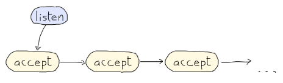 <br> 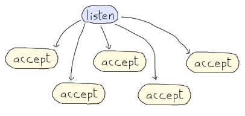 ??? When we write programs in Elixir and Erlang we can take advantage of the concurrency features of the virtual machine. Here we have 2 diagrams that I've stolen from LYSE. They show how a hypothetical web server application. It listens and accepts requests as fast as possible. What impact does concurrency have on the performance of the web server? --- ## Without concurrency 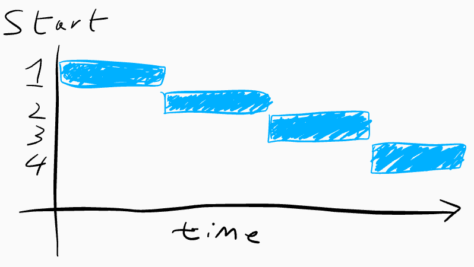 ??? Here's a graph showing how the requests are handled over time. 4 requests are made to the server at the same time. The first request is handled, then the second, then the third, then the fourth. The time taken to handled all the requests is equal to the sum of the time taken by each request. --- ## Without concurrency 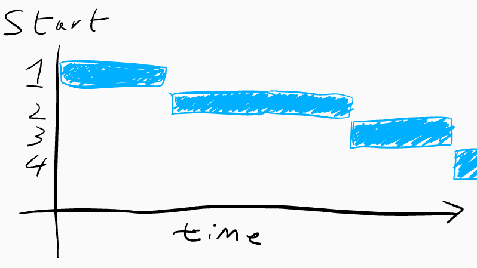 ??? What happens when one request is slow and takes more time than we would like? All requests that come after the slow request have to wait for it to complete before they can be processed. --- ## With concurrency 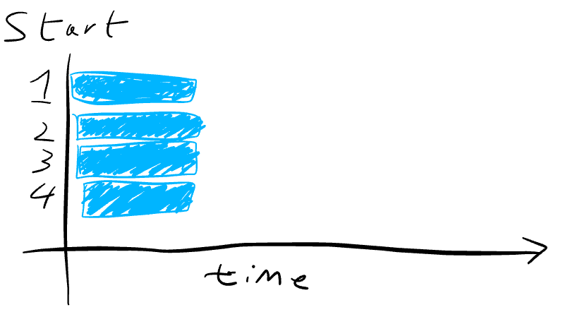 ??? So what about when the web server handles requests concurrently? Here each request is handled in a dedicated light-weight virtual machine thread that in the Erlang world we call a process. Other languages have other abstractions, but we use processes. When 4 requests come in at the same time each one is handled by a dedicated process, each running at the same time. The total time taken is now equal to the time taken by the slowest request, with a largely insignificant overhead for the concurrency abstraction. --- ## With concurrency 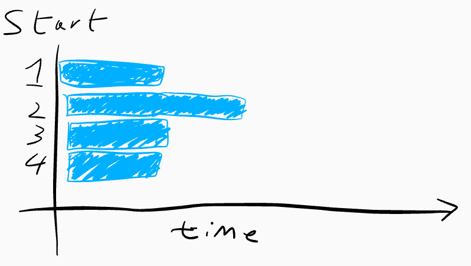 ??? What happens when one request is slow? Because all the processes are independent it doesn't matter if one is slow- no others are delayed. Every other request completes in a timely fashion, and our overall performance remains good. Concurrency is a wonderful tool for writing software the performs well, and Elixir and Erlang gives us the means to make concurrent programs without too many headaches. --- class: middle, center, slide-blue # Concurrency <br> vs <br> parallelism ??? <!-- 6 mins since start --> I want to quickly talk about the relationship between concurrency and parallelism. What's the difference? --- ## Without parallelism 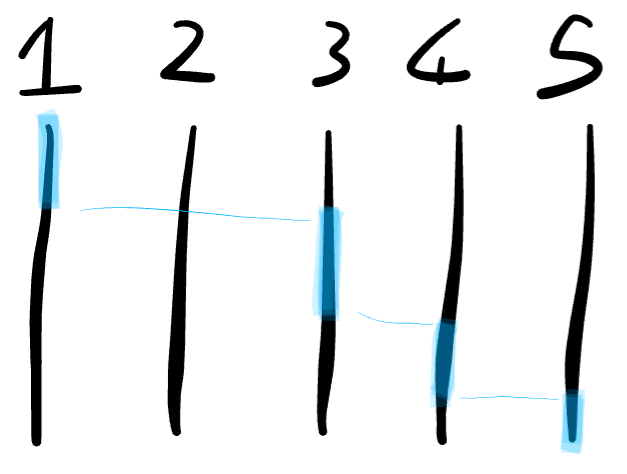 ??? With concurrency each item of work is taking place at the same time, but the CPU might only be performing one task at any one moment. Most the time each item of work may be waiting on IO, waiting for data to come in off a socket, waiting for data to be written to disc, so the CPU isn't always needed. Because of this we can share the CPU between many Erlang processes, switching to whichever is needed at that moment. --- ## With parallelism 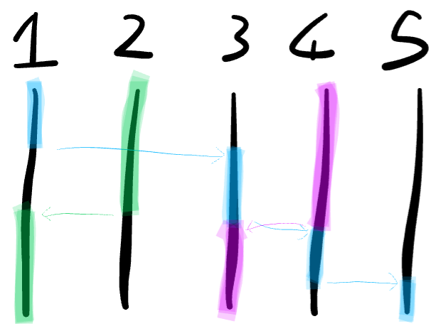 ??? A step up from thing single threaded concurrency is parallelism. If we have a CPU with multiple cores we can actually compute multiple things at the very same time. Here we've gone from 1 blue core being shared, we've also got a green core and a pink one, speeding up the CPU bound part of our program as well as the IO parts. Why is this especially important now? --- ## Parallelism 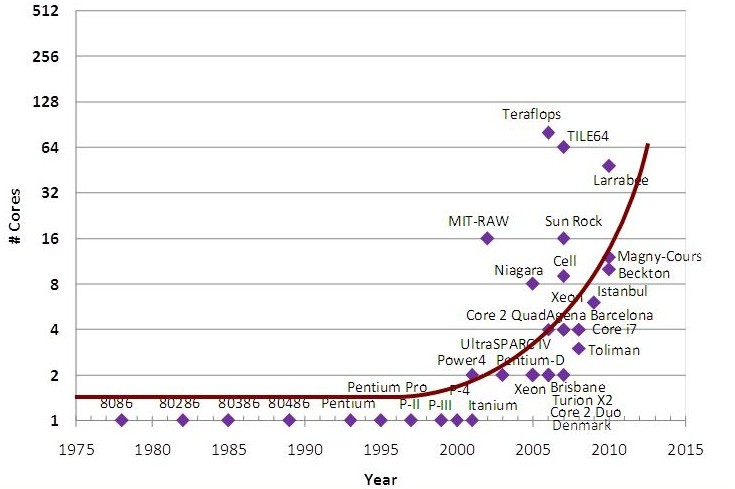 <cite> Nikos Hardavellas, Northwestern University, EECS </cite> ??? This graph shows the number of cores per CPU from the 70s up until a couple years ago, and that number is increasing exponentially. CPU are no longer getting faster, instead they are getting more cores, so if we want our programs to get faster as hardware improves we need our programs to be able to make full use of all these cores. For BEAM languages this is not a problem. If we write our program to be concurrent the virtual machine will auto-magically turn it into a parallel one by spreading the processes across all of the CPU cores. If we have 4 cores, our program should run 4 times faster with little to no effort. --- ## Predictable garbage collection ??? This is the BEAM's garbage collector. It's adorable, but more importantly is also parallel. Garbage collection is performed on a per-process basis. This means your program will never decide it's time to do global garbage collection and pause the world, introducing a big chunk of latency to, say, all the requests made to your web application. And what's more because GC doesn't occur until after the process has been around for a little, if you use a new process for each item of work you may never hit GC in the hot path. Latency in Erlang and Elixir tends to be predictable with low deviation. --- ## Fault tolerance ??? There are lots of other languages that offer concurrency, parallelism, and low latency garbage collection, but this feature really sets the BEAM apart from the rest. What's the industry standard way of dealing with bugs, mistakes, and other things that may make a program crash? We try to make sure it doesn't happen. We find all the bugs and remove them. Turns out this is really difficult, so maybe would we use automated tests to find them, but if we make a mistake in the tests then bugs can slip though. --- class: bug-list ## Preventing failure <style type="text/css" media="screen"> .bug-list li { padding-bottom: 10px; } </style> 1. Example tests <br>EUnit, ExUnit 2. Property tests <br>QuickCheck 3. Weak type systems <br>Java, C, Go, etc 4. Stronger type systems <br>Haskell, Elm, etc 5. Formal verification <br>Idris, Agda, Coq ??? If we're clever we might use a tool like QuickCheck to generate vast numbers of test cases based around the desired properties of our program, finding bugs in edge cases we wouldn't have otherwise considered. Static type systems are capable of preventing entire classes of bugs from programs, especially stronger ones found in languages like Elm and Haskell. Even then the type systems are not expressive enough to verify that the program is error free. After that we could write proofs that verify that our program has the correct behaviour. This is incredibly powerful and could be the future of programming, but today it's difficult and time consuming. --- ## We can't win ??? Even if somehow we made our code bug free we can't escape error. What if there's a bug in the language runtime? What if we run out of memory? What if there's a bug in the operating system? What if there's a hardware failure and our program gets subtly corrupted? What if cosmic radiation causes some bits in RAM to flip from 0 to 1? What if our computer is struck by a bolt of lighting? Avoiding failure is impossible, and most languages ignore this fact. --- ## Processes to the rescue 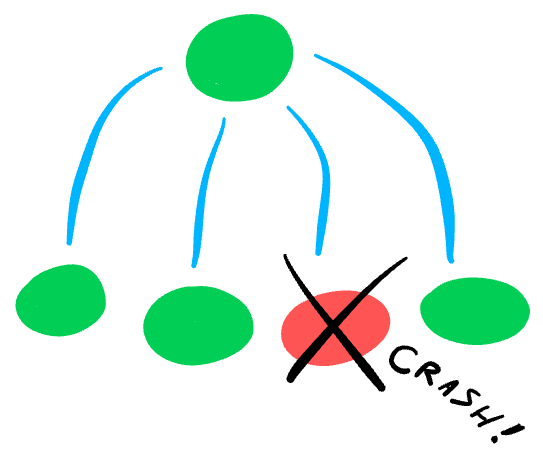 ??? How do BEAM languages tackle this problem? With processes again. Processes act as failure bulkheads. If there is an unexpected error then only the process that has the problem crashes, not the entire program. All over processes continue as normal. Because of this when errors inevitably happen only the sub-system that has the problem will be effected, everything else can remain functional and our service can stay up. In a well structured program every process has a supervisor process watching over it which is responsible for restarting the failed process in a configurable fashion. Turning it off and on again at on a micro-level. Using this we can build systems that self heal, incrementally shedding of state until the problem has been resolved. --- ## More good stuff - Simple functional programming --- ## More good stuff - Simple functional programming - Immutable data --- ## More good stuff - Simple functional programming - Immutable data - Good libraries and tooling --- ## More good stuff - Simple functional programming - Immutable data - Good libraries and tooling - Dynamic programming --- ## More good stuff - Simple functional programming - Immutable data - Good libraries and tooling - Dynamic programming - Meta programming --- ## More good stuff - Simple functional programming - Immutable data - Good libraries and tooling - Dynamic programming - Meta programming - Declarative binary manipulation --- ## More good stuff - Simple functional programming - Immutable data - Good libraries and tooling - Dynamic programming - Meta programming - Declarative binary manipulation - Interoperability between languages --- ## More good stuff - Simple functional programming - Immutable data - Good libraries and tooling - Dynamic programming - Meta programming - Declarative binary manipulation - Interoperability between languages - A friendly community --- class: title, middle, slide-blue # What are they not quite as good at? ??? Sadly Erlang and Elixir are not perfect There's a bunch of things that could be improved with them. The aspect I'm particularly interested is how they present feedback to the programmer when a mistake has been made. I think that improvements in this area could bring great value and productivity for relatively low cost. Let's take a closer look. --- class: center ## Error messages can be unhelpful 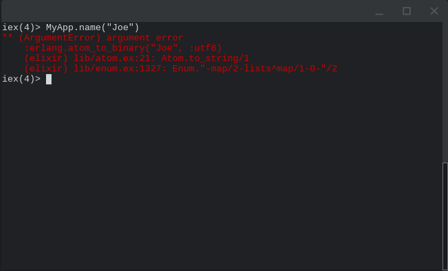 ??? Error messages leave a lot to be desired. Here we have an error being printed after we call the function `MyApp.name` on a string. Many Elixir error messages are better than this one but it is not an atypical example for Elixir, and it is the norm for Erlang. I'm going to focus on common cases that could be improved. Beyond the name "argument error" it doesn't tell us what the problem is. It shows a call to `erlang.atom_to_binary` so we can establish that the application crashes at this point, but where is the source of the error? Have we called `MyApp.name` with the wrong argument? Perhaps it wants and atom rather than a string. Alternatively is the `MyApp` module internally inconsistent? Does it have a bug? We could be using it as intended but the code we're calling is the source of the problem? There's no way to tell without reading the documentation, the source code, or if we get unlucky, both. --- class: center ## Meanwhile, in Elm 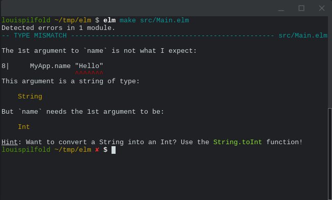 <br> ??? Here's how the same problem would be reported in the Elm programming language. It tells us exactly where the problem is, it's on line 8 where we called `MyApp.name`. It even shows us the code. This is fantastic- we know exactly where we need to make the change, it's where we called the function. With this feedback we have complete confidence that the `MyApp.name` function is not the problem, so we don't need to investigate further. If there was a problem with `MyApp.name` this error would show exactly where, so even in scenario all we would need to do is to open the right file and scroll to the specified line. What's more it tells us exactly what the problem is, in this case that we are calling it with a String when it expects an Int. It even gives us a hint of how to turn an Int into a String. --- ## Slow feedback cycle --- ## Refactoring isn't cheap ??? We rely on unit tests to catch errors and mistakes If that doesn't work we they might be found during manual testing If that doesn't work we may find the mistake when processes crash in production --- class: large-code ## Hard to verify behaviour <br> ```ruby queue = QueueLib.append(queue, 10) ``` ??? What will this function do? Will it always return the same thing? Could it throw an exception? Could it write to the database? Could it cause the program to exit? --- ## Which languages do these better? <style type="text/css" media="screen"> .langs { display: flex; justify-content: space-around; align-items: center; flex-wrap: wrap; } .langs div { display: inline-block; max-width: 40%; margin-top: 30px; } .langs img { max-width: 100%; max-height: 150px; } </style> <div class="langs"> <div> <img src="ocaml.png"> </div> <div> <img src="haskell.svg"> </div> <div> <img src="elm.png"> </div> <div> <img src="reason.svg"> </div> <div> <img src="rust.png"> </div> <div> <img src="scala.png"> </div> </div> ??? --- Ven diagram here --- Ven diagram with Gleam here --- class: middle, slide-blue ## Want to make a language? - The Super Tiny Compiler <br> Jamie Kyle - Understanding Computation <br> Tom Stuart - Types & Programming Languages <br> Benjamin C. Pierce - Type Systems <br> Tom Primožič ??? --- class: middle, slide-purple ### Some links - https://gleam.run - https://github.com/lpil/gleam - IRC `#gleam-lang` on Freenode ### Thanks to Jonny Arnold, Jeremy Pierre, José Valim. ### Call me? - @louispilfold ???